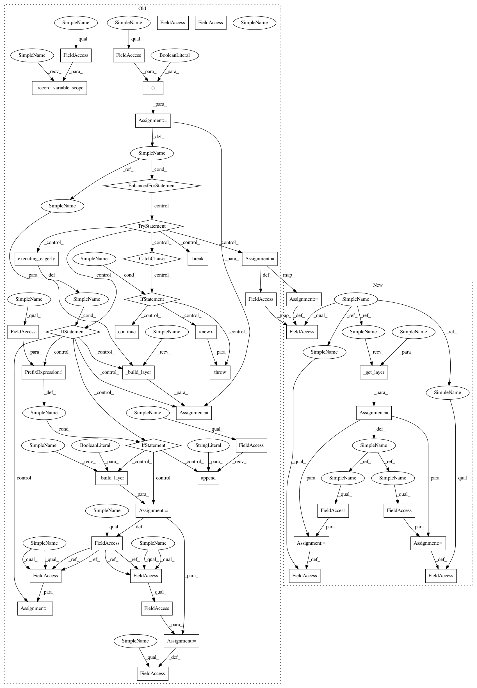

84398f9fb6e6a8d2bb913367fdd389f9ca3a5405,deepchem/models/tensorgraph/layers.py,Conv3D,create_tensor,#Conv3D#Any#Any#,2169
Before Change
parent_tensor = inputs[0]
if len(parent_tensor.get_shape()) == 4:
parent_tensor = tf.expand_dims(parent_tensor, 4)
for reuse in (self._reuse, False):
try:
if tf.executing_eagerly():
if not self._built:
self._layer = self._build_layer(False)
self._non_pickle_fields.append("_layer")
layer = self._layer
else:
layer = self._build_layer(reuse)
out_tensor = layer(parent_tensor)
if self.normalizer_fn is not None:
out_tensor = self.normalizer_fn(out_tensor)
break
except ValueError:
if reuse:
// This probably means the variable hasn"t been created yet, so try again
// with reuse set to false.
continue
raise
out_tensor = out_tensor
if set_tensors:
self._record_variable_scope(self.scope_name)
self.out_tensor = out_tensor
if tf.executing_eagerly() and not self._built:
self._built = True
self.variables = self._layer.variables
return out_tensor
class Conv2DTranspose(SharedVariableScope):
After Change
bias_initializer=self.biases_initializer(),
kernel_initializer=self.weights_initializer())
def create_tensor(self, in_layers=None, set_tensors=True, **kwargs):
inputs = self._get_input_tensors(in_layers)
parent_tensor = inputs[0]
if len(parent_tensor.get_shape()) == 4:
parent_tensor = tf.expand_dims(parent_tensor, 4)
layer = self._get_layer(set_tensors)
out_tensor = layer(parent_tensor)
if self.normalizer_fn is not None:
out_tensor = self.normalizer_fn(out_tensor)
out_tensor = out_tensor
if set_tensors:
self.out_tensor = out_tensor
self.trainable_variables = layer.trainable_variables
if tf.executing_eagerly() and not self._built:
self._built = True
self.trainable_variables = layer.trainable_variables
return out_tensor
class Conv2DTranspose(SharedLayer):
In pattern: SUPERPATTERN
Frequency: 4
Non-data size: 45
Instances
Project Name: deepchem/deepchem
Commit Name: 84398f9fb6e6a8d2bb913367fdd389f9ca3a5405
Time: 2019-04-08
Author: peastman@stanford.edu
File Name: deepchem/models/tensorgraph/layers.py
Class Name: Conv3D
Method Name: create_tensor
Project Name: deepchem/deepchem
Commit Name: 84398f9fb6e6a8d2bb913367fdd389f9ca3a5405
Time: 2019-04-08
Author: peastman@stanford.edu
File Name: deepchem/models/tensorgraph/layers.py
Class Name: Conv3DTranspose
Method Name: create_tensor
Project Name: deepchem/deepchem
Commit Name: 84398f9fb6e6a8d2bb913367fdd389f9ca3a5405
Time: 2019-04-08
Author: peastman@stanford.edu
File Name: deepchem/models/tensorgraph/layers.py
Class Name: Conv2DTranspose
Method Name: create_tensor
Project Name: deepchem/deepchem
Commit Name: 84398f9fb6e6a8d2bb913367fdd389f9ca3a5405
Time: 2019-04-08
Author: peastman@stanford.edu
File Name: deepchem/models/tensorgraph/layers.py
Class Name: Conv3D
Method Name: create_tensor
Project Name: deepchem/deepchem
Commit Name: 84398f9fb6e6a8d2bb913367fdd389f9ca3a5405
Time: 2019-04-08
Author: peastman@stanford.edu
File Name: deepchem/models/tensorgraph/layers.py
Class Name: Conv2D
Method Name: create_tensor